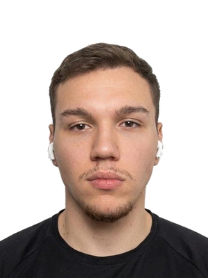
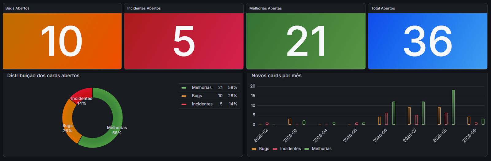
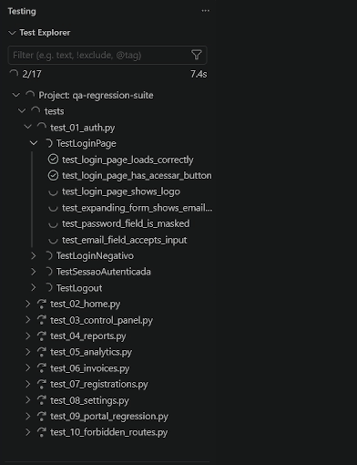

Breno Gabriel
Analista de QA Júnior
- Empresa
- Voltta Energy · remoto
- Base
- Osasco/SP
- Foco
- Automação E2E web, mobile e API
- Idioma
- Inglês intermediário
- linkedin.com/in/brenogs
- GitHub
- github.com/BrenoSantos07

anexar
foto.pngEsta ficha é meu portfólio. Escondi 3 bugs nela. Tente achar antes de rodar o regressivo.
Como eu testoNão confio só no que a tela mostra. Quando algo quebra, abro a API no Postman e consulto o banco pra descobrir onde o problema começou de verdade. Bug bom de reportar é o que já chega com a causa.
Experiência
não executadoVoltta Energy
eMobility e Energy · remoto- Analista de QA Júniordez/2025 – hoje
- Estagiário de QAdez/2024 – nov/2025
- Automatizo testes E2E web e mobile com Playwright e Robot Framework (Python), Appium (Java), Cypress (JS) e Maestro (YAML).
- o regressivo ao CI/CD. Ele caiu de dias para no máximo 1 hora e roda a cada nova demanda, validando fluxos do portal, geração de PDF e retorno das APIs.
- Testo E2E os fluxos de recarga que passam por Kafka e Azure Service Bus. O emulador de carregador OCPP fica comigo.
- Testo API com Postman e Swagger e valido dados via SQL.
- Escrevo os critérios de aceite em BDD/ATDD, porque o time não tem PO. Uso Qase e Azure DevOps e treino os QAs novos.
- Uso IA (Claude e ChatGPT) para cenários de teste, manutenção da suíte, queries SQL, bugs e incidentes, análise de logs e revisão de código.
Projeto: dashboard de qualidade
não executadoCriei por iniciativa própria. Ele puxa bugs e incidentes do board e mostra no Grafana quem está dentro do SLA.
- SLA 2 dias para incidente
- SLA 5 dias para bug
- 01Azure Boardsorigem dos cards
- 02Pythonno GitHub Actions
- 04Grafanapainel e SLA

anexar
grafana.pngAntes, pra saber o que estava fora do SLA, alguém tinha que abrir o board e contar card por card. Agora a gerência abre o painel e vê na hora o que está atrasado e em qual área.
github.com/BrenoSantos07/dashboard-grafana-analise-qualidadeEvidência: suíte rodando
não executado
anexar
suite.gifFormação
não executadoAcadêmica
- Pós em Engenharia de Software, ênfase em Qualidade e Testes · Anhanguera2026 · em curso
- Análise e Desenvolvimento de Sistemas · Anhanguera2022–2025
Certificados
- QA AutomationQazando
- DP-100 ChallengeDIO
- AWS Educate Cloud 101AWS
- JavaScript Full StackOneBitCode
- Banco de DadosFundação Bradesco
Contato
não executadoPode me chamar pelo LinkedIn ou por e-mail.
linkedin.com/in/brenogs · github.com/BrenoSantos07
Antes de QA
Trabalhei com carga e descarga e depois com controle de acesso num condomínio de mais de 1.000 famílias. Lá eu criei um sistema web pra cadastrar moradores e veículos. Vi aquilo funcionando no dia a dia e decidi que queria trabalhar com software.
Controlador de Acesso · Mrs Fenixset/2022 – dez/2025
Auxiliar de Carga e Descarga · Pão de Açúcarout/2021 – set/2022